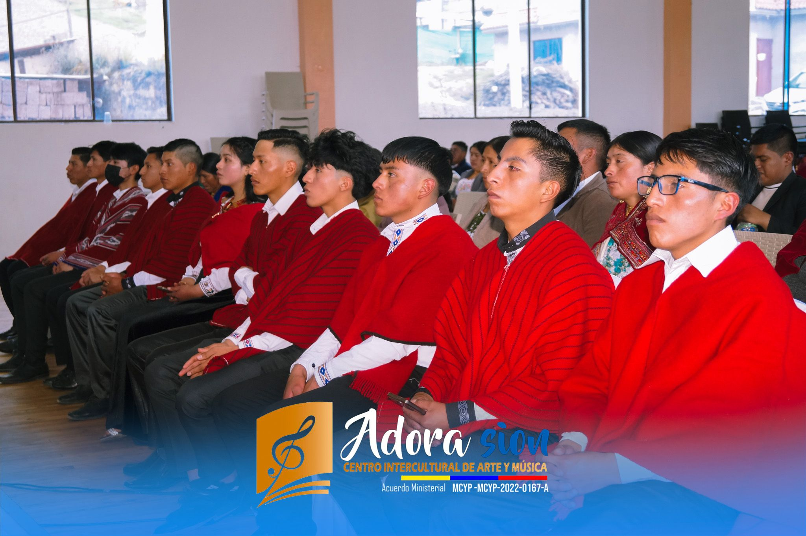

Sobre Nosotros
Música, fe y propósito. Una historia de excelencia dedicada a formar músicos que transforman su entorno.
Centro Intercultural de Artes Musicales
Formar músicos y ministros de alabanza con excelencia técnica, fundamentos espirituales sólidos y un corazón sensible a la adoración, equipándolos para impactar positivamente en sus iglesias y comunidades en Puyo, Cajabamba y Guaranda.
Ser la academia de referencia en la formación musical y ministerial en la región central del Ecuador, reconocida por la calidad humana y artística de sus egresados y por ser un semillero de talentos con propósito.
C.I.A.M. Adora-Sión nació en 2015 del sueño de crear un espacio donde la excelencia musical y la fe pudieran converger. Hoy, hemos crecido y tenemos el privilegio de servir en tres sedes.
Lo que nos define

Fe
Fundamento espiritual en cada acorde y cada lección.

Excelencia
Rigor técnico y calidad artística en todo lo que hacemos.

Comunidad
Un semillero de talentos que se apoyan mutuamente.

Adoración
Un corazón sensible que da sentido a la técnica.